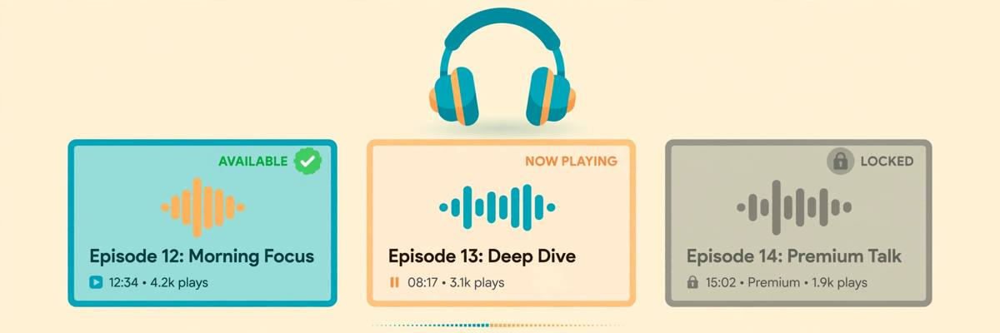

Free AI Voice Generator No Sign Up: I Tested 6, 3 Are Actually Good
Text-to-speech is the friendliest corner of the no-signup internet. Unlike AI video — where I checked 8 tools and zero passed — voice generation actually has tools that let you type, listen, and download without an account. I ran the same script through 6 of them, created zero accounts, and kept score on what matters: does it work without login, does the voice sound human, and can you actually download the MP3.
Voice is an interesting test case because the failure modes are different from chatbots and images. A chatbot either answers or it doesn't. An image is either good or it isn't. But a voice generator can pass every functional check and still fail you — the voice sounds like a GPS from 2009, or the download button demands an email at the last second, or the "free" tier is 500 characters, roughly one paragraph. So this test scored the full pipeline: type text, pick a voice, generate, listen, download. If any step demanded an account, that's a fail.
How I tested
Same script on every tool, chosen to expose robotic delivery:
- The script: "The old lighthouse had stood on the cliff for a hundred years, and on stormy nights, sailors swore they could hear it humming. Nobody believed them — until the night the light went out." — narration with mood shifts, a dash of drama, and punctuation the voice has to respect.
- Scored on: no account wall at any step (pass/fail), voice naturalness, character limits on the free tier, MP3 download without login, and language/voice selection.
- Method: fresh browser session, no logins anywhere. If a tool asked for email before the download finished, it failed — even if generation itself was open.
The 3 that are actually good
1. TTSMaker — the most generous free tier
TTSMaker is the rare tool whose free tier reads like a paid plan's feature list: 20,000 characters per week, 200+ voices across 40+ languages, MP3 export with no watermark — and no sign-up required for basic use. The lighthouse script came out clean, with the pauses landing where the punctuation put them. Voice quality won't match ElevenLabs at the premium end, but for narration, tutorials, and faceless video voiceovers, it's more than adequate.
What earned it the top spot: the weekly character allowance resets without nagging, and at no point in the pipeline — typing, generating, downloading — did anything ask who I was. This is the no-signup standard done right. If you need one bookmark for "turn this text into speech right now," this is it.
2. Narakeet — the fastest path from text to audio
Narakeet's pitch is simplicity: type text into the script box at the top of the page, pick a voice, get audio. No login, no signup, and it means it. The interface is plainer than TTSMaker's — fewer voices on display, less tuning — but the time from landing page to downloaded MP3 was the shortest of anything I tested. The narration held up well; slightly flatter emotional range than TTSMaker's best voices, but perfectly serviceable.
Narakeet is the tool for "I need this paragraph as audio in the next 60 seconds." Less depth, more speed. Both have their place; this one wins on friction, or rather the total absence of it.
3. AnySpeech — the language coverage pick
AnySpeech advertises "no sign up required" prominently and delivers: 40+ languages, instant MP3 download, no registration, no credit card. The English narration was solid — natural pacing, no robotic stutter on the longer sentences. Where it stands out is multilingual work: if your script isn't in English, the language list here is deeper than the other two winners.
The trade-off: the voice roster feels smaller than TTSMaker's, and the site pushes its premium tier more visibly. But the free path itself stayed clean through my full test — type, generate, download, no identity requested.
Quick comparison
| Tool | Best for | Free allowance | Download w/o account? | Voice quality |
|---|---|---|---|---|
| TTSMaker | Highest volume | 20,000 chars/week | Yes | Good |
| Narakeet | Fastest workflow | Generous trial | Yes | Good |
| AnySpeech | Multilingual | 40+ languages free | Yes | Good |
| Magic Hour | — | 3 generations/day | Yes | Very good |
| NoteGPT | — | Free tier | Walled at download | Good |
| Speechify | — | Trial | No — account first | Excellent |

The 3 that didn't make it
Magic Hour — great voices, tiny allowance
Magic Hour's voice quality is genuinely a tier above — 400+ preset voices, and it shows. The problem is arithmetic: 3 free generations per day with no account. That's enough to fall in love with the product and not enough to actually use it. It's a demo wearing a free tier's clothes. Worth knowing about, and the voices are excellent, but it fails the "can I rely on this without an account" test that the three winners pass.
NoteGPT — the download wall
NoteGPT lets you type and generate freely, which is why it was on the test list. Then you click download — and there's the account wall. This is the classic pattern, same as with chatbots: everything works until the moment you want to keep the result. A voice you can generate but not download without an account isn't a no-signup tool; it's a preview.
Speechify — excellent, and not for us
Speechify's voice quality is arguably the best of the six — 1000+ voices, 60+ languages, genuinely lifelike. It also requires an account before doing anything meaningful, which disqualifies it from this list by definition. Included here because it dominates the search results for this keyword and readers will wonder. It's a great product behind a signup wall; this site is about what's in front of it.
What "no sign up" should actually mean for voice
Voice tools have invented a special trick the other categories haven't: the download wall. Chatbots wall you at the prompt box. Image generators wall you with watermarks. Voice generators let you do everything — type, pick voices, generate, even listen — and then ask for your email when you click download. It's the cruelest version because you've already invested the effort.
So the strict definition matters even more here: if I can't go from landing page to an MP3 file on my disk without typing an email address, it's not a no-signup tool. The three winners pass. NoteGPT is the cautionary tale — so close, and the wall is exactly where it hurts most.
FAQ
Is there a completely free AI voice generator with no sign up and no limits?
No — and the honest answer matters more than the hopeful one. Every free tier has a limit: characters per week (TTSMaker), generations per day (Magic Hour), or voice selection depth. The question isn't "unlimited" but "enough for real use without an account." TTSMaker's 20,000 characters per week is the closest to that bar.
Can I use the generated audio commercially?
Depends on the tool, and the answer is usually "not on the free anonymous tier." Most providers restrict commercial use to paid plans. Check each site's terms before using generated voiceover in monetized content — this is one area where the fine print genuinely matters.
Which is best for YouTube voiceovers?
For faceless-channel narration volume, TTSMaker's weekly allowance is the practical pick. For the most natural delivery in short clips, Magic Hour's voices are better — but 3 generations a day won't sustain a channel. Many creators use the free tier to test voices, then pay for the one they like. That's a reasonable pipeline.
Do these work in languages other than English?
Yes — this is a strong category for multilingual support. AnySpeech covers 40+ languages, TTSMaker 40+, Narakeet a solid roster. Quality varies by language; major European languages and Mandarin are well served, smaller languages less so. Test your specific language before committing to a workflow.
Why not just use my OS built-in text-to-speech?
You can, and for accessibility it's fine. But system TTS voices are noticeably robotic compared to even the free AI tiers — flat prosody, no emotional range. The gap between "readable" and "listenable" is exactly what these tools sell. Try the lighthouse script on both and you'll hear it in ten seconds.
Are there really no credits or tokens on the winners?
On TTSMaker, Narakeet, and AnySpeech as tested: no account, no credit counter, no "X generations remaining" nagging in the anonymous flow. TTSMaker's weekly character reset is the only visible meter, and it's stated upfront rather than sprung on you. That's the honesty standard.
The takeaway
Voice is the healthiest no-signup category I've tested: TTSMaker for volume, Narakeet for speed, AnySpeech for languages — all three take you from landing page to MP3 with zero identity. The failures are instructive too: Magic Hour rations you to 3 generations a day, NoteGPT walls the download button, and Speechify is excellent behind a wall this site doesn't cross.
Same deal as always: providers change policies, so we re-verify. The maintained list lives in our directory — and if a listed tool adds a signup wall, tell us. If you came here searching "free ai voice generator no sign up," you now know which three actually mean it.
Tested 2026-10-11 · Providers change their signup policies — we re-verify regularly.